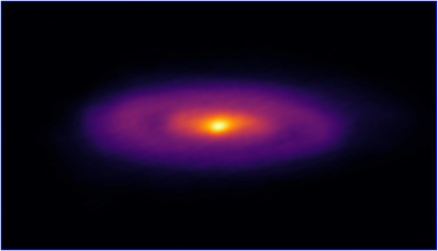
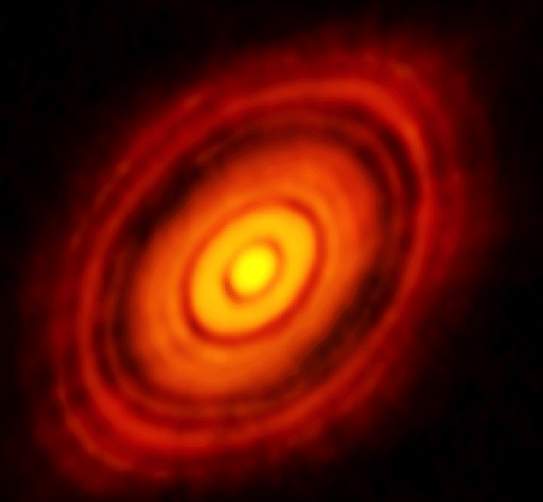
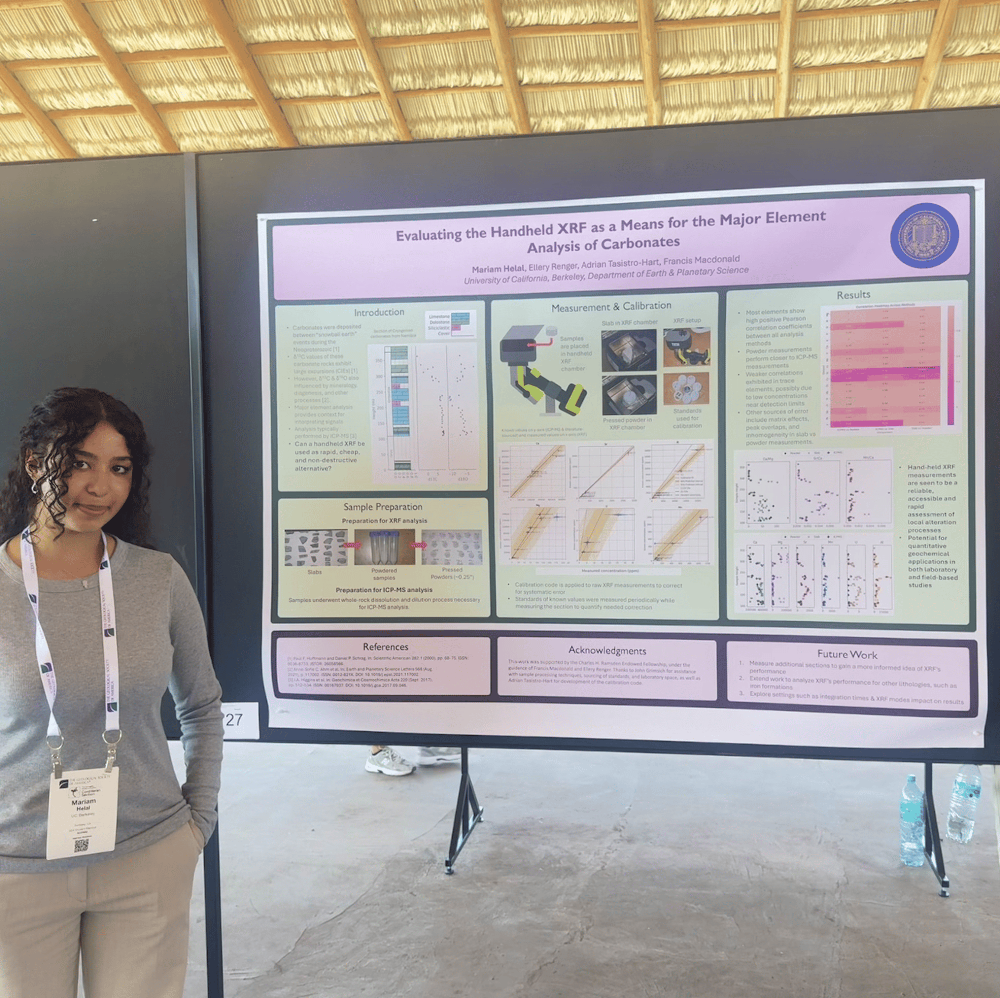
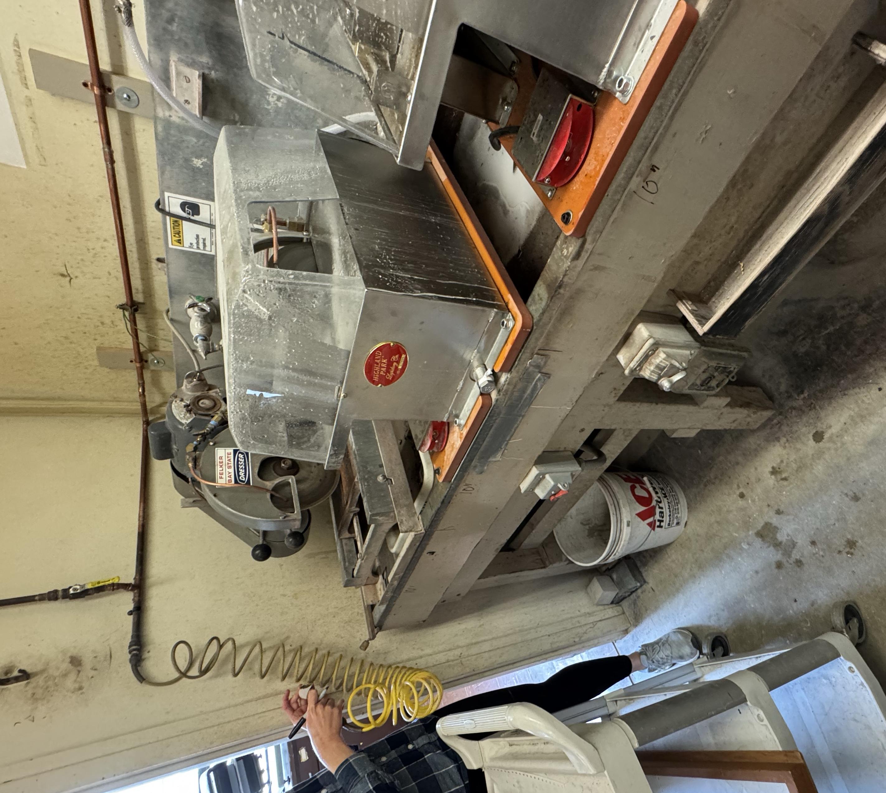

Water ice emission in protoplanetary disks:



I am working under my PI, Jennifer Bergner, as well as graduate student Jack Anderson, on modeling water ice in protoplanetary disks. The goal of my work is to understand how different disk parameters impact observed spectra of the 2 FIR water ice emission peaks, as well as how these parameters impact the radial and vertical distribution of water ice within the disks.
Developing a protocol for hand-held XRF analysis of carbonates:



I was awarded the Ramsden Research Fellowship for the summer 2025 to work on an independent project under the guidance of my PI, Francis Macdonald, and graduate student Ellery Renger. I continued this project during the academic year and ultimately presented my findings at the 2026 GSA Cordilleran Section. The goal of my work was to develop a protocol for analyzing carbonate major element compositions using a hand-held XRF instrument, which is cheaper, quicker, and non-destructive as compared to the traditional method of using a mass spectrometer.